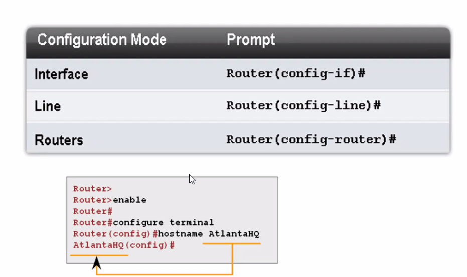

Hay que condigurar el Router y cambiar el hostname para poder identificarlo mas rapido.
Configure terminal muede al modo global de confuración.
En el modo global se mete la fonciguracion del routeador:
Al configurar cambia el prompt.